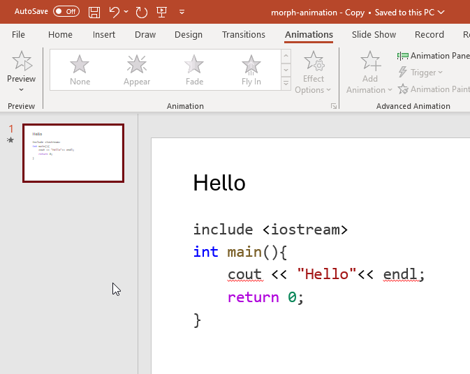
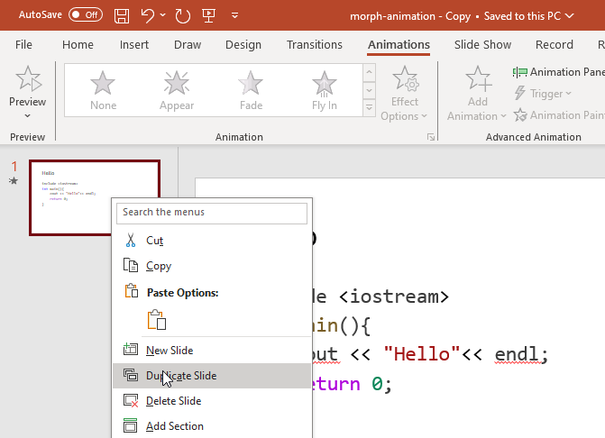
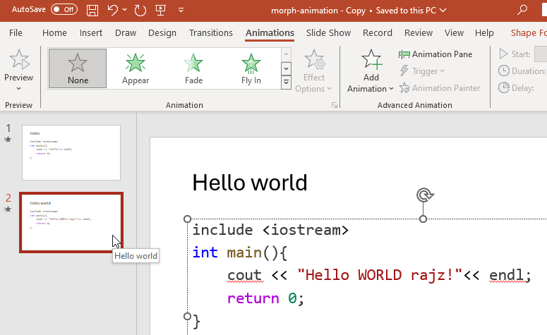
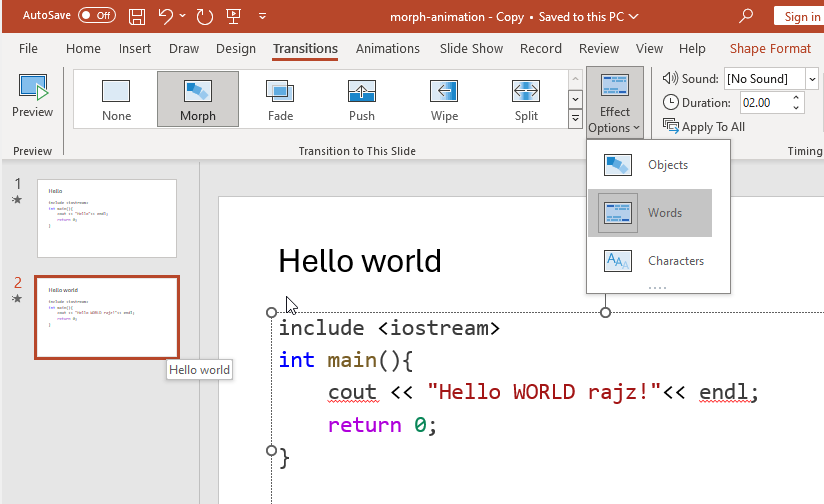
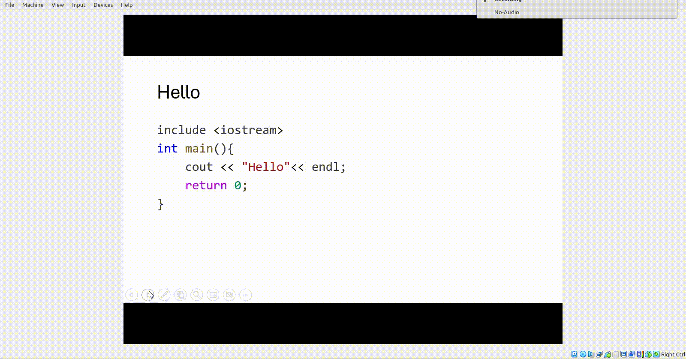

Creating beautiful code presentations
To make  presentations effective, especially, for me while showcasing the incremental code changes for a particular function.. It is a must to have the visually appealing (diff) animation. The answer is Morph Transitions. Sadly, it is present in only on windows. I am a Linux user for 10+ years. Believe me, I have to install Windows inside my linux on VM. :S Would love to see this option in Google Slides or Open office. Okay, enough of the build-up. Steps are in a DIY-style.
presentations effective, especially, for me while showcasing the incremental code changes for a particular function.. It is a must to have the visually appealing (diff) animation. The answer is Morph Transitions. Sadly, it is present in only on windows. I am a Linux user for 10+ years. Believe me, I have to install Windows inside my linux on VM. :S Would love to see this option in Google Slides or Open office. Okay, enough of the build-up. Steps are in a DIY-style.
Steps
- Make the first slide
- Duplicate
- Make changes
- Add morph to 2nd slide. with “words” as effect options. Reduce time to 1 second (for better viewing.)
- Tada done. okay, tata!
Step 1

Step 2

Step 3

Step 4

Demo

PS- I have learned this a long time ago. But just got time to log it now.
Ref
- Thanks to Cornor!
- Video